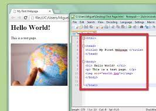

Las imágenes son elementos en linea, por lo que una imagen insertada dentro de un texto se comportará como un elemento más del texto. Esto puede quedar bien con imágenes muy pequeñas, que no superen la altura de una línea de texto, pues alrededor de la imagen se mostrará una sola línea de texto que se colocará en la parte inferior de la imagen.
Podemos insertar la imagen entre dos elementos, por ejemplo entre dos párrafos, en ese caso la imagen Tendrá la misma alineación que esté definida para su elemento contenedor, pero todo el resto de la altura que ocupe la imagen se quedará en blanco. Una posible solución para imágenes muy grandes que ocupen casi todo el ancho del contenedor, es encerrarlas dentro de una etiqueta de párrafo con el atributo align para centrarla: < p align="center">< img src="..." alt="...">< /p >
Aunque lo más normal para colocar la imagen en la página es usar el código CSS, usando sólo HTML podemos también conseguir colocar la imagen en la página de una forma estéticamente normal. Lo habitual es integrar la imagen en el texto de forma que la imagen quede a un lado de la página y el texto cubriendo todo el otro lado. Esto lo conseguimos con el atributo align="left" (imagen a la izquierda), o align="right" (imagen a la derecha). Este atributo debemos insertarlo dentro de la etiqueta de imagen:La imagen de la izquierda tiene el siguiente código: < img src="objetos/internet.jpg" alt="internet" align="left"/> y De manera análoga, la imagen de la derecha tiene este código: < img src="objetos/internet.jpg" alt="internet" align="right"/>
Aunque lo normal es que los bordes y los márgenes se apliquen mediante el código CSS, también se pueden incluir en el código HTML para las imágenes. El atributo border="..." define un borde del tamaño indicado alrededor de la imagen. Su valor es un número que expresa los píxeles de grosor que tendrá el borde. Los atributos vspace="..." y hspace="..." indican el espacio libre, en pixeles, que tiene que colocarse entre la imagen y los otros elementos que la rodean. vspace indica los margenes laterales, mientras que hspace indica el margen superior e inferior.
